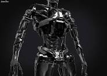

T 800
Это страница о роботах-терминаторах серии 800,
чтобы посмотреть информацию о модификациях этой серии перейдите на страницу
T-8xx.

Броня
В основе Т-800 — каркас из титанового сплава, в общих чертах имитирующий скелет человека.
Каркас неуязвим для стрелкового оружия, хотя может быть уничтожен нитроглицериновыми шашками.
Так, в фильме
"Терминатор"
он выдержал 11 выстрелов из дробовика
Кайла Риза
, +1 в глаз, +1 в руку;
взрыв у машины, аварию, расстрел из дробовика в погоне,
аварию, расстрел в полицейском участке, столкновение с автопоездом,
взрыв бензовоза, огонь.

Вооружение
Встроенного вооружения не имеет, использует оружие людей. В стандартной комплектации вооружён
плазменной винтовкой «Вестингауз» мощностью 40 киловатт.
Может использовать иное доступное оружие. Может использовать оружие людей - плазменную винтовку (Валмет M 82).
Характеристики
- Рост: 188 см.
- Вес: Вес эндоскелета — 90 кг, по др. данным — 180 кг
- Максимальная скорость: 35,4 км в час
- В неподвижном состоянии способен поддерживать автономную работу до 120 лет в, а полную мощь до 50 - лет.
- Встроенное оружие отсутствует.
спросите у Яндекcа больше